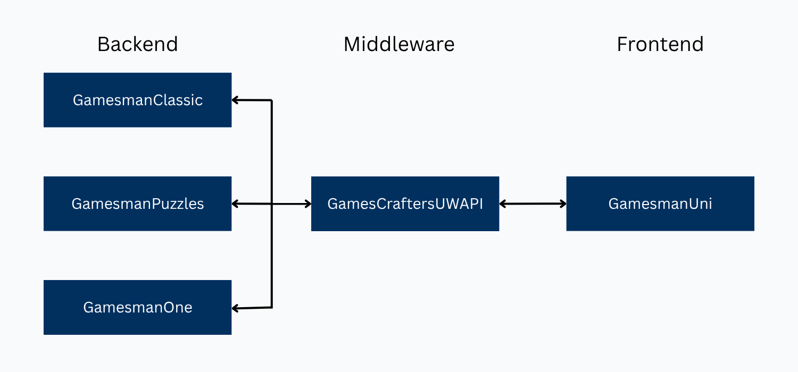

Overall Infrastructure & Architecture
The GamesCrafters system is built as a small microservices architecture. The system is divided into the frontend, middleware, and backends, but they all work together to let users play, explore, and analyze strongly solved games in the browser.
Architecture Overview
At a high level, the system is divided into three layers:
- Frontend: GamesmanUni, the web interface users see
- Middleware: GamesCraftersUWAPI, a Python HTTP server that translates frontend requests into backend calls
- Backends: game-solving engines like GamesmanClassic, GamesmanPuzzles, GamesmanOne, and newer systems like GamesmanPy

Frontend
GamesmanUni is our website, the part of the system that lives in the browser and that players actually interact with. Uni provides a visual and interactive interface for users to play, analyze, and explore games. It's written in TypeScript using the Vue.js framework and was developed by former GamesCrafter Shein Lin Phyo.
Uni’s job is to:
- Render boards, pieces, move buttons, and analysis tools using Image AutoGUI
- Send HTTP requests to UWAPI (e.g., “give me the value of this position”)
- Display values, remotenesses, winbys, and other metadata returned from the backend
- Provide a smooth, interactive UI for exploring games and puzzles
Uni does not know how to solve games itself. Instead, it gets the list of games and variants from UWAPI, requests position data and move lists via UWAPI’s JSON API, and uses AutoGUI JSON to decide how to draw the game.
Middleware
The Universal Web Application Programming Interface (UWAPI) is the middleware layer that connects the frontend (e.g., GamesmanUni) to the appropriate backend service (e.g., GamesmanClassic, GamesmanPuzzles, or GamesmanOne). UWAPI serves as the single point of communication between the frontend and backend. When a user interacts with a game on Uni, such as making a move, undoing an action, or loading a game’s instructions, UWAPI translates and routes that request into the correct backend service.
UWAPI’s responsibilities include:
- Listing available games and variants for Uni to display.
- Forwarding position and move requests to the appropriate backend (Classic, Puzzles, One, Py, etc.).
- Translating between backend-specific encodings and a common JSON format.
- Providing Image AutoGUI configuration for each game (board layout, images, sounds, themes).
Instead of having multiple frontends talk directly to multiple backends, UWAPI gives us one stable interface. That means you can write new frontends that just call UWAPI. You can also swap out or upgrade backends without changing the frontend. All games share a consistent way to fetch instructions, positions, and values.
Backends
The backend is the data and logic backbone of a computer application. Each of our backend services have a preferred purpose and set of limitations.
GamesmanClassic
The original C-based solver framework. It supports many two-player, perfect-information abstract strategy games.
GamesmanPuzzles
A Python project focused on one-player puzzles (like Lights Out and various sliding puzzles).
GamesmanOne
A multithreaded C solver for two-player, perfect-information abstract strategy games, designed to tackle larger games.
GamesmanClassic
GamesmanClassic is our traditional two-player game-solving framework written in C first developed by Professor Dan Garcia. Since it is single-threaded, Classic is commonly used for solving small-to-medium-sized games. Classic has many solving algorithms available, the following non-exhaustive list is provided:
- Vanilla non-loopy solver: standard depth-first search through the game tree
- Loopy solver: handles positions that can repeat or cycle
- Retrograde solver and bottom-up solver
Many of the classic GamesCrafters showcase games (like Connect 4 variants, Quarto projects, and other two-player games) are implemented in Classic and then exposed to Uni via UWAPI.
GamesmanPuzzles
GamesmanPuzzles, or Puzzles for short, is our one-player (puzzles) game-solving framework written in Python. Given its reduced scope and lower-barrier of entry, it is a perfect introduction to our systems and algorithms. However, it will soon be deprecated by GamesmanPy, so we will omit the description for now.
GamesmanOne
GamesmanOne is our multithreaded two-player game-solving framework written in C developed as a master project by gamescrafter Robert Shi. It's perfect for solving large games!
Putting the Layers Together
Let’s walk through what happens when a player makes a move in Uni:
- The player clicks on a move button on the Uni board. AutoGUI maps that click to a move string.
- Uni sends an HTTP request to UWAPI with the game, variant, position, and move.
- UWAPI looks up the game and variant and forwards the request to the appropriate backend (Classic, One, Puzzles, or Py).
- The backend computes the child position, value, and remoteness and returns that to UWAPI in its own internal format.
-
UWAPI converts this into a JSON structure, including:
- The new position
- The AutoGUI position string for drawing
- The position’s value and remoteness
- A list of legal moves
- Uni receives the JSON, updates the board via AutoGUI, and re-renders the page—without reloading.
Summary
- The GamesCrafters system is organized into a frontend (Uni), middleware (UWAPI), and multiple backends (Classic, Puzzles, One, Py, etc.).
- Uni is the website that renders boards with Image AutoGUI and talks to UWAPI over HTTP.
- UWAPI is serves as the single point of communication between the frontend and backend.
- Backends like GamesmanClassic, GamesmanPuzzles, GamesmanOne, and GamesmanPy explore game trees, compute values and remotenesses, and store solutions.
- This separation of systems makes it easier to add new games, experiment with new solvers, and build new frontends over time.
In the next chapters, you’ll dive deeper into how to plug your own game into this architecture by solving it, wiring it into UWAPI and Uni, and finally by deploying it so others can play!